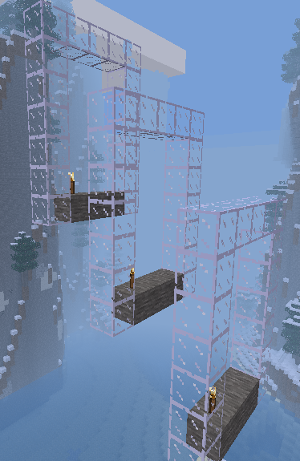
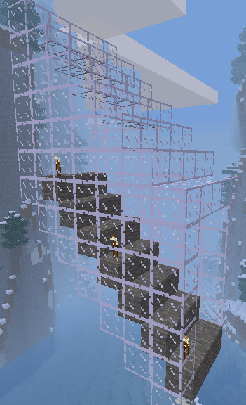

Continue glass tunnel down on a diagonal when centre of tunnel floor goes from x1=69, y1=14 to x2=9, y2=46.
To ensure no lava or water leak into tunnel, build the full tunnel in glass first and then hollow it out with air. By never having an open end, water and lava can't flow in.
To create a sloping tunnel you have to build it in segments. You build a new segment for each value of x. The image below shows three segments several blocks apart.
If you build segments for each value of x then the segments are joined and you have a continuous tunnel.
The 'Check Task' button above relies on minetest to evaluate this task. You may have to press it again when your program has finished to ensure minetest has had time to evaluate it.